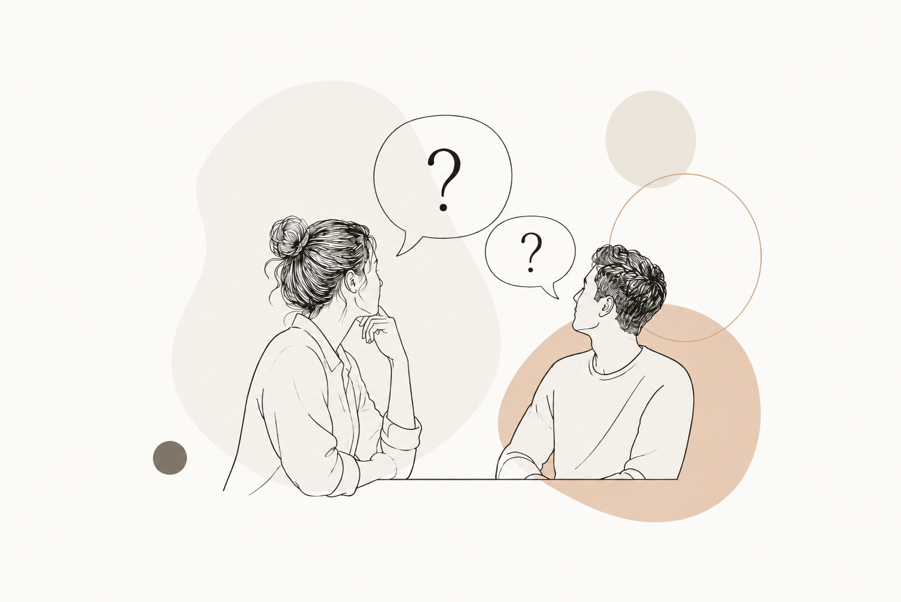

FREQUENTLY ASKED
QUESTIONS

IS TRAUMA-INFORMED SOMATIC COUNSELLING COVERED BY INSURANCE?
Trauma-informed somatic counselling is currently not covered by health insurance. Sessions are self-funded and are considered an investment in your wellbeing and personal growth.
While it is not a replacement for medical or psychological treatment where that is needed, somatic counselling offers a different way of working with your experiences, bringing attention not only to thoughts and emotions, but also to the body and nervous system.
If you're unsure whether this approach is right for you, you're always welcome to reach out before booking a session.
HOW MUCH DOES A SESSION COST?
You’re welcome to start with a free 30-minute discovery call to ask questions and get a sense of whether working together feels right for you.
A regular 75-minute session is €65.
WHAT APPROACHES DO YOU USE IN YOUR PRACTICE?
My work draws on trauma-informed somatic counselling and a range of approaches explored during my training, including polyvagal theory, nervous system regulation, somatically oriented trauma processing, bilateral processing techniques, parts-based approaches, mindfulness and breathwork.
I also integrate counselling skills, stabilisation and safety, with attention to boundaries, ethics and the individual needs of each person.
My aim isn't to apply one method to everyone. Instead, I draw from these approaches selectively and collaboratively, depending on what feels appropriate and supportive for you.
DO YOU OFFER ONLINE SESSIONS?
Yes.
Online sessions offer the same 75-minute space for conversation, body awareness and exploration as sessions in person.
We can work from the comfort of your own space, incorporating conversation, grounding, breath awareness and, where appropriate, gentle movement.
Curious about what an online session looks like? Explore online somatic counselling →
DO I NEED TO HAVE EXPERIENCED TRAUMA?
Not at all.
Many people come because they're navigating grief, burnout, anxiety, chronic stress or a major life transition. Being trauma-informed simply means I work with an awareness of how our experiences can shape the nervous system and the way we move through life.
DO I NEED TO DO MOVEMENT?
No.
Movement is always an invitation, never an expectation.
Some sessions are mostly conversational, while others include more experiential work. We'll decide together what feels supportive.
IS THIS THERAPY?
I'm a trauma-informed somatic counsellor, not a psychologist or psychiatrist.
My work focuses on supporting emotional wellbeing, nervous system regulation and personal growth. It does not replace medical or psychiatric care, and I'm happy to work alongside other healthcare professionals when appropriate.
HOW MANY SESSIONS WILL I NEED?
There is no set number.
Some people come for support during a specific life event, while others choose to work together over a longer period. We'll regularly reflect on your goals and what feels right for you.
WHAT IF I DON'T KNOW HOW I FEEL?
That's completely okay.
Many people arrive feeling disconnected from themselves or unsure how to put their experience into words.
Part of our work is learning to notice what's happening without needing to have all the answers.
DIDN'T FIND WHAT YOU WERE LOOKING FOR?
If your question isn't answered here, feel free to get in touch.